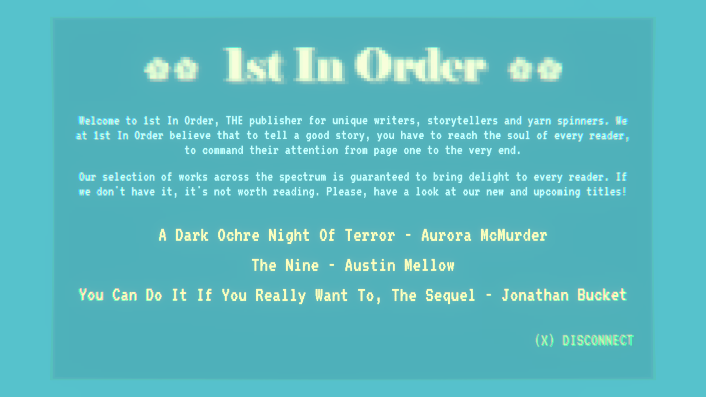
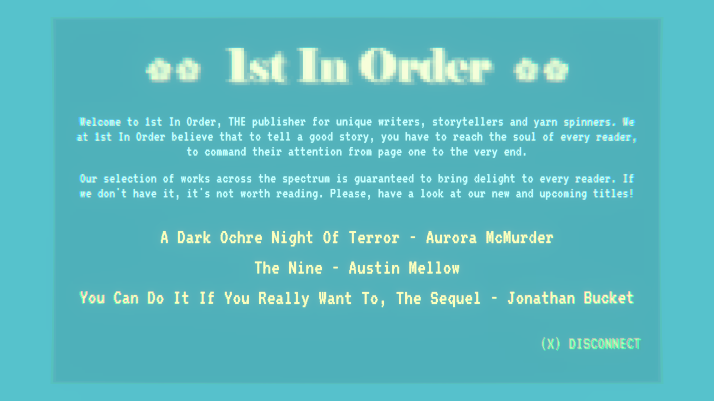

Store Links

Day Repeat Day is an interactive story and a match-3 game that takes you through the years in a life of an average person. You're hired to do a job. You try to manage your relationships. But you're never really sure where it's all leading to. It's a story about living, the daily grind and what it all means in the end, topped with a sprinkle of satire and mysteries.
After doing a lot of action games, I wanted to do something much more intimate and personal and Day Repeat Day is what came of it. I hope you find it a meaningful experience!
Release Date: April 14th 2021
Platforms: Windows / iOS
Languages: English
"It takes some serious ingenuity to subvert a genre as entrenched as the mobile match-3 game, but somehow developer Kimmo Factor, probably most well-known for the awesome hack ‘n slash game Barbearian, has done exactly that " "Game of the Week"
Touch Arcade
Kimmo Lahtinen / @gimblll - Design / Code / Art
Kimmo is an indie game developer who before has created games such as Barbearian, Drift'n'Drive and Trigonarium. Before his indie career, he spent a 13-years at Housemarque crafting top console titles such as Resogun, Outland and Dead Nation.
Tommi Lahtinen / @tommybaynen - Music
Tommi is an experienced electronic music producer whose tracks have been played on worldwide stages by legendary DJs such as Above and Beyond, Armin van Buuren and Sultan + Shepard.


 
